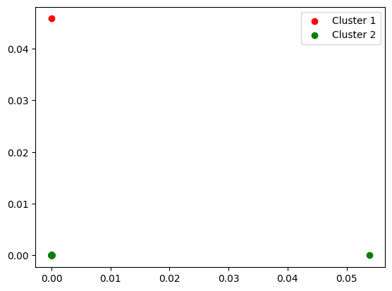

Tugas 7 : Implementasi Fuzzy C-Means#
Pada Tugas 7 diminta untuk melakukan pengelompokan berita dengan metode clustering yaitu Fuzzy C-Means.
Dibuat Oleh:
Nama : Sabil Ahmad Hidayat
NIM : 220411100058
Kelas : PPW A
Link Code : https://colab.research.google.com/drive/1sRYMNK7FcLm4iaVh1bVL8ylJ_hxlh9e5?usp=sharing
Link Github : meinhere/ppw
Import Library#
!pip install scikit-fuzzy
^C
Defaulting to user installation because normal site-packages is not writeable
Collecting scikit-fuzzy
Obtaining dependency information for scikit-fuzzy from https://files.pythonhosted.org/packages/9d/06/da70811f95c4a3bada55e7b20c957548a4d9bc21150916f0c024286d67c7/scikit_fuzzy-0.5.0-py2.py3-none-any.whl.metadata
Downloading scikit_fuzzy-0.5.0-py2.py3-none-any.whl.metadata (2.6 kB)
Downloading scikit_fuzzy-0.5.0-py2.py3-none-any.whl (920 kB)
---------------------------------------- 920.8/920.8 kB 1.0 MB/s eta 0:00:00
Installing collected packages: scikit-fuzzy
# library awal untuk perhitungan dan pengolahan teks
import numpy as np
import pandas as pd
# library untuk proses modeling
from sklearn import preprocessing
from sklearn.model_selection import train_test_split
from sklearn.linear_model import LogisticRegression
from sklearn.decomposition import TruncatedSVD
from skfuzzy.cluster import cmeans
# library untuk evaluasi model
from sklearn.metrics import classification_report, confusion_matrix
# plotting
import matplotlib.pyplot as plt
import seaborn as sns
# load and save model
import pickle
import requests
Preprocessing Data#
Load Data#
test_df = pd.read_csv('https://raw.githubusercontent.com/meinhere/ppw/master/publish/tugas-2/dataset/test_df.csv', delimiter=',')
test_df.head()
| desc_clean_stem | label | |
|---|---|---|
| 0 | jakarta kompas com wakil presiden wapres ma ru... | MONEY |
| 1 | jakarta kompas com pt layar nasional indonesia... | MONEY |
| 2 | jakarta kompas com kuota subsidi sepeda motor ... | OTOMOTIF |
| 3 | jakarta kompas com milik honda vario ganti tin... | OTOMOTIF |
| 4 | jakarta kompas com pt hutama karya persero tut... | OTOMOTIF |
github_raw_url = "https://raw.githubusercontent.com/meinhere/ppw/master/publish/tugas-3/model/tfidf_vectorizer.sav"
response = requests.get(github_raw_url)
response.raise_for_status()
vectorizer = pickle.loads(response.content)
vectorizer
/usr/local/lib/python3.10/dist-packages/sklearn/base.py:380: InconsistentVersionWarning: Trying to unpickle estimator TfidfTransformer from version 1.5.2 when using version 1.6.0. This might lead to breaking code or invalid results. Use at your own risk. For more info please refer to:
https://scikit-learn.org/stable/model_persistence.html#security-maintainability-limitations
warnings.warn(
/usr/local/lib/python3.10/dist-packages/sklearn/base.py:380: InconsistentVersionWarning: Trying to unpickle estimator TfidfVectorizer from version 1.5.2 when using version 1.6.0. This might lead to breaking code or invalid results. Use at your own risk. For more info please refer to:
https://scikit-learn.org/stable/model_persistence.html#security-maintainability-limitations
warnings.warn(
TfidfVectorizer()In a Jupyter environment, please rerun this cell to show the HTML representation or trust the notebook.
On GitHub, the HTML representation is unable to render, please try loading this page with nbviewer.org.
TfidfVectorizer()
documents = test_df['desc_clean_stem'].tolist()
test = test_df['desc_clean_stem']
X = vectorizer.transform(test).toarray()
# Fuzzy c-means clustering
n_clusters = 2 # Number of clusters
fuzzy_cmeans = cmeans(X.T, n_clusters, m=2, error=0.005, maxiter=1000)
# Membership matrix
membership_matrix = fuzzy_cmeans[1]
# Assign documents to clusters based on maximum membership
clusters = np.argmax(membership_matrix, axis=0)
# Print cluster assignments
for i, doc in enumerate(documents):
print(f"Document '{i+1}' belongs to cluster {clusters[i] + 1}")
Document '1' belongs to cluster 2
Document '2' belongs to cluster 1
Document '3' belongs to cluster 1
Document '4' belongs to cluster 1
Document '5' belongs to cluster 1
Document '6' belongs to cluster 2
Document '7' belongs to cluster 1
Document '8' belongs to cluster 2
Document '9' belongs to cluster 1
Document '10' belongs to cluster 2
Document '11' belongs to cluster 1
Document '12' belongs to cluster 1
Document '13' belongs to cluster 1
Document '14' belongs to cluster 2
Document '15' belongs to cluster 1
Document '16' belongs to cluster 2
Document '17' belongs to cluster 1
Document '18' belongs to cluster 1
Document '19' belongs to cluster 2
Document '20' belongs to cluster 2
Document '21' belongs to cluster 2
Document '22' belongs to cluster 2
Document '23' belongs to cluster 1
Document '24' belongs to cluster 2
Document '25' belongs to cluster 1
Document '26' belongs to cluster 1
Document '27' belongs to cluster 1
Document '28' belongs to cluster 2
Document '29' belongs to cluster 1
Document '30' belongs to cluster 1
Document '31' belongs to cluster 2
Document '32' belongs to cluster 1
Document '33' belongs to cluster 2
Document '34' belongs to cluster 1
Document '35' belongs to cluster 1
Document '36' belongs to cluster 2
Document '37' belongs to cluster 1
Document '38' belongs to cluster 1
Document '39' belongs to cluster 1
Document '40' belongs to cluster 1
Document '41' belongs to cluster 1
Document '42' belongs to cluster 1
Document '43' belongs to cluster 2
Document '44' belongs to cluster 1
Document '45' belongs to cluster 1
Document '46' belongs to cluster 1
Document '47' belongs to cluster 1
Document '48' belongs to cluster 1
Document '49' belongs to cluster 1
Document '50' belongs to cluster 1
Document '51' belongs to cluster 1
Document '52' belongs to cluster 2
Document '53' belongs to cluster 2
Document '54' belongs to cluster 1
Document '55' belongs to cluster 1
Document '56' belongs to cluster 1
Document '57' belongs to cluster 1
Document '58' belongs to cluster 1
Document '59' belongs to cluster 2
Document '60' belongs to cluster 1
Document '61' belongs to cluster 2
Document '62' belongs to cluster 2
Document '63' belongs to cluster 1
Document '64' belongs to cluster 1
Document '65' belongs to cluster 2
Document '66' belongs to cluster 2
Document '67' belongs to cluster 2
Document '68' belongs to cluster 1
Document '69' belongs to cluster 1
Document '70' belongs to cluster 2
Document '71' belongs to cluster 1
Document '72' belongs to cluster 2
Document '73' belongs to cluster 1
Document '74' belongs to cluster 2
Document '75' belongs to cluster 1
Document '76' belongs to cluster 2
Document '77' belongs to cluster 2
Document '78' belongs to cluster 2
Document '79' belongs to cluster 2
Document '80' belongs to cluster 2
predictions = fuzzy_cmeans[1]
predictions = predictions.argmax(axis = 0)
predictions, np.unique(predictions, return_counts = True)
(array([1, 0, 0, 0, 0, 1, 0, 1, 0, 1, 0, 0, 0, 1, 0, 1, 0, 0, 1, 1, 1, 1,
0, 1, 0, 0, 0, 1, 0, 0, 1, 0, 1, 0, 0, 1, 0, 0, 0, 0, 0, 0, 1, 0,
0, 0, 0, 0, 0, 0, 0, 1, 1, 0, 0, 0, 0, 0, 1, 0, 1, 1, 0, 0, 1, 1,
1, 0, 0, 1, 0, 1, 0, 1, 0, 1, 1, 1, 1, 1]),
(array([0, 1]), array([48, 32])))
import matplotlib.pyplot as plt
plt.scatter(X[predictions == 0, 0], X[predictions == 0, 1], c = 'red', label = 'Cluster 1')
plt.scatter(X[predictions == 1, 0], X[predictions == 1, 1], c = 'green', label = 'Cluster 2')
plt.legend();
